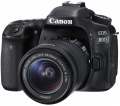
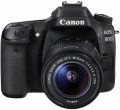
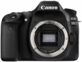
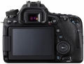
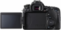
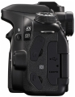
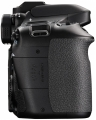
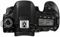

器材库 > APS及其以下画幅可换镜头数码相机 > EOS 80D

规格总览
产品类型
APS画幅可换镜头数码相机
发布日期
2016-02-18
影像规格
影像传感器
CMOS
影像传感器尺寸
22.3×14.9mm
总像素
约2580万
有效像素
约2420万
影像处理器
DIGIC 6
静态图像格式
JPEG, RAW, RAW+JPEG
静态图像尺寸
L：2400万像素(6000×4000)M：1060万像素(3984×2656)S1：590万像素(2976×1984)S2：250万像素(1920×1280)S3：35万像素(720×480)RAW：2400万像素(6000×4000)M-RAW：1350万像素(4500×3000)S-RAW：600万像素(3000×2000)
画幅比
3:2, 4:3, 16:9, 1:1
短片格式
MOV, MP4
短片尺寸
MOV格式：1920×1080（全高清）：29.97p/25p/23.98pMP4格式：1920×1080（全高清）：59.94p/50p/29.97p/25p/23.98p1280×720（高清）：59.94p/50p/29.97p/25p
音频格式
MOV：线性PCM、MP4：AAC
除尘系统
自动、手动、添加除尘数据
镜头和对焦
镜头卡口
Canon EF
兼容镜头
佳能EF系列镜头（包括EF-S、不包括EF-M镜头） （35毫米换算焦距约为镜头焦距的1.6倍）
对焦系统类型
TTL辅助影像重合，使用专用自动对焦感应器的相差检测
对焦点
45点（最多45个十字型自动对焦点）
对焦模式
单次自动对焦、人工智能伺服自动对焦、人工智能自动对焦、手动对焦
AF辅助灯/光
有
曝光控制
测光系统
使用7560像素 RGB+红外 测光感应器、63区TTL全开光圈测光
测光模式
中央重点测光, 评价测光, 点测光, 局部测光
测光范围
1EV~20EV
曝光模式
基本拍摄区：场景智能自动、闪光灯关闭、创意自动、特殊场景模式、创意滤镜模式创意拍摄区：程序自动曝光、快门优先自动曝光、光圈优先自动曝光、手动曝光、B门曝光、自定义拍摄模式
拍摄模式
单拍、高速连拍、低速连拍、静音单拍、静音连拍、10秒自拍/遥控、2秒自拍/遥控
图像模式
自动、标准、人像、风光、精致细节、中性、可靠设置、单色、用户定义1-3
场景模式
特殊场景模式：食物、儿童、烛光、夜景人像、手持夜景、HDR逆光控制、人像、风光、微距、运动
创意滤镜
颗粒黑白、柔焦、鱼眼效果、玩具相机效果、微缩景观效果、水彩画效果、HDR标准绘画风格、HDR浓艳绘画风格、HDR油画风格、HDR浮雕画风格
快门类型
电子控制焦平面快门
快门速度
1/8000至30秒（总快门速度范围。可用范围随拍摄模式各异。）、B门
闪光同步速度
1/250
曝光补偿
±5EV以1/3或1/2EV级调整
自动曝光锁
有
自动包围曝光
在±3级间以1/3或1/2级为单位调节（可与手动曝光补偿组合使用）
ISO感光度
基本拍摄区模式：在ISO 100～6400之间自动设置创意拍摄区模式（P,Tv,Av,M,B）：自动ISO、在ISO 100～16000之间手动设置（以1/3或1级为单位）、或ISO感光度扩展到“H”（相当于ISO 25600）
白平衡
自动（氛围优先)、自动（白色优先)、预设（日光、阴影、阴天、钨丝灯、白色荧光灯、闪光灯）、用户自定义、色温（约2500-10000K）具备白平衡校正和白平衡包围曝光
连拍
高速连拍：最高约7张/秒※使用实时显示和伺服自动对焦拍摄时，最高约5张/秒低速连拍：最高约3张/秒静音连拍：最高约3张/秒
闪光灯
内置闪光灯
弹出式
闪光指数
约12（ISO 100，以米为单位）
闪光补偿
±3EV以1/3或1/2EV级调整
外接闪光灯
兼容EX系列闪光灯
取景器/显示屏
取景器
眼平五棱取景器
取景范围
100%
取景放大倍率
约0.95倍
屈光度调节范围
约-3.0～+1.0 m-1（dpt）
对焦屏
固定式
反光镜
快回型
景深预视
有
LCD类型
彩色TFT LCD
LCD尺寸
3.0英寸
LCD像素
约104万
LCD特性
触摸屏, 翻转屏
亮度调节级数
手动（7级）
Live View
有
Live View 对焦模式
面部＋追踪、自由移动多点、自由移动1点手动对焦（可进行约5倍、10倍放大确认）※支持触摸自动对焦
文件输入/输出
存储卡
SD/SDHC, SDXC
数据接口
高速USB
视频/音频接口
C型HDMI接口
无线功能
Wi-Fi, NFC
支持打印协议
DPOF
电源
电池
电池LP-E6N或LP-E6（1块）
续航能力
使用取景器拍摄：23℃时约960张、0℃时约860张使用实时显示拍摄：23℃时约300张、0℃时约270张
外接电源
交流电适配器套装ACK-E6
机身规格
颜色
黑色
尺寸
139×105.2×78.5mm
重量
仅机身约650g / CIPA方针约730g
其它
配件端口
热靴, 快门线, 麦克风输入端子
工作温度
0~40℃
工作湿度
不高于85%
附件
锂电池LP-E6N，电池充电器LC-E6E（含电源线），相机宽背带EW-EOS 80D
ufowjt2017-03-26 07:504.88 分
操作性 5.00功能性 4.50美观性 5.00趣味性 5.00耐用性 5.00性价比 5.00解像力 4.50色彩还原 5.00
产品图 / 样片
EOS 80D

EOS 80D

EOS 80D

EOS 80D

EOS 80D

EOS 80D

EOS 80D

EOS 80D
评测 / 相关文章
- 详细内容 （存档）
- 全面升级的多面能手 佳能EOS 80D相机评测 （存档）
- ［试用］十年，从5D到80D （存档）
- ［试用］用佳能80D记录南疆胡杨林 （存档）
- ［试用］全面升级的多面手 佳能EOS 80D实拍体验 （存档）
- ［资讯］DP：佳能6D2动态范围不敌80D （存档）
- ［资讯］佳能EOS 77D和EOS 80D该买谁？ （存档）
- ［资讯］JPG直出哪家强 八家相机画质大比拼 （存档）
- ［试用］EOS 80D 拍鸟体验 （存档）
- ［试用］佳能EOS 80D大战索尼A6300 （存档）
- ［资讯］EASYCOVER硅胶套80D版上市 （存档）
- ［资讯］EISA公布2016-2017年度器材奖项 （存档）
相关文章
- ［试用］十年，从5D到80D （存档）
- ［试用］用佳能80D记录南疆胡杨林 （存档）
- ［试用］全面升级的多面手 佳能EOS 80D实拍体验 （存档）
- ［资讯］DP：佳能6D2动态范围不敌80D （存档）
- ［资讯］佳能EOS 77D和EOS 80D该买谁？ （存档）
- ［资讯］JPG直出哪家强 八家相机画质大比拼 （存档）
- ［试用］EOS 80D 拍鸟体验 （存档）
- ［试用］佳能EOS 80D大战索尼A6300 （存档）
- ［资讯］EASYCOVER硅胶套80D版上市 （存档）
- ［资讯］EISA公布2016-2017年度器材奖项 （存档）
- ［试用］谁更好玩更实用 佳能70D VS 80D大比拼 （原站已下线）
- ［试用］对焦提升画质不错 小试佳能EOS 80D （原站已下线）
- ［试用］综述佳能中端旗舰机EOS 80D （原站已下线）
- ［试用］佳能 EOS 80D记录宠物的可爱瞬间 （原站已下线）
- ［行情］佳能中端80D单机低价 （原站已下线）
- ［试用］5D到80D，变了的画幅，不变的eos十年 （存档）
- ［资讯］提升动态范围 DxO公布佳能80D测试成绩 （原站已下线）